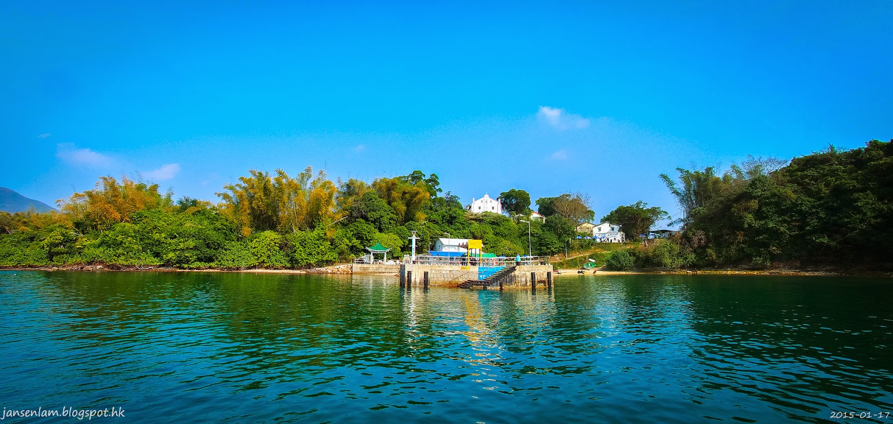

西貢鹽田梓村 Yim Tin Tsai
首頁
簡介
宗教文化
接待諮詢
聯絡我們
西貢鹽田梓村
香港少數充滿天主教特色的客家村落，有近三百年歷史，曾為陳姓客家人居住，全村信奉天主教， 村中建有百多年歷史的教堂聖約瑟小堂，是全港保存最妥善的鄉村教堂。這所獨具特色的鄉村教堂零六年更獲得聯合國亞太區文化部頒發的“文物優異獎”。

簡介
鹽田梓名字的由來
鹽田梓，又名鹽田仔，是一個位於西貢內海的小島， 距離西貢墟約3公里，面積不到一平方公里。開村先祖是一對陳姓夫婦， 在三百多年前由中國觀瀾移居到沙頭角東北寶安縣的鹽田村，再由鹽田村遷至此地，設田曬鹽為生。“梓”是指鄉里，意思是不忘故鄉。 鹽田梓曾是香港鹽產地之一，村長陳忠賢指，當年祖先移居該地，由於掌握產鹽技術，於是開墾鹽田，利用鹽田地產鹽維生。 該處亦命名為“鹽田梓”。鹽田梓產鹽，主要是利用水流法。潮漲時海水經水閘流入鹽田，多餘海水，由另一水閘排出，經過日曬風吹，就能產出海鹽。
鹽田梓的古往今來
西貢鹽田梓是香港少數充滿天主教特色的客家村落，有近三百年歷史，曾為陳姓客家人居住，全村信奉天主教， 村中建有百多年歷史的教堂聖若瑟小堂，是全港保存最妥善的鄉村教堂。這所獨具特色的鄉村教堂，在2005年更獲得聯合國亞太區文化部頒發的“文物優異獎”。 隨著村民不斷遷出，現小島已長期無村民居住。但一年一度的主保瞻禮，百多名村民都會“回鄉”聚首， 令人回想到當年小島的熱鬧生機。村子後人為了保留這種非常獨特的客家文化與天主教自然融合的原生村落風貌，正積極爭取修復村落，並向政府提出集宗教、文化、旅遊、生態及度假元素的『五合一』保育方案——“宗教有天主教教堂；生態有紅樹林及鹽田，文物有由村校改建的文物展館，政府可以串連起來發展，發展商則負責旅遊及度假部分，兩者沒有衝突，最重要是平衡各元素”，向外推廣鹽田文化。小島獨具「原汁原味」特色的鄉村文化，凡研究者均感甚具文化生態保育及旅遊發展潛質。 不過，鹽田梓村長陳忠賢表示，雖然曾交由一發展商發展，但是一直難以開展。村民已收回村屋 ，計劃籌集資金自行復修，希望長遠可特色民宿，讓人渡宿或參觀。首先完成活化的是位於村入口的村公所，現已化身為一所茶座。茶座白色的外墻，加上各種植物擺設，恍如希臘海邊的小白屋。小屋內擺放著一些傳統文物器具，提供一些傳統小食，讓遊人品嚐。 近年，村民更組成「鹽光保育中心(慈善團體)」 ，匯聚社會資源，開展鹽田和村屋的復修， 推動宗教文化生態和簡樸生活體驗等保育和教育工作，並以中、英及客家話等，招待到來的中外訪客。
街渡定時服務
過去前往鹽田梓，一般只能包船，交通不便。現村民自發提供定時的街渡服務。詳情請瀏覽 「接待諮詢 」 及「 聯絡我們」。 最新消息 歡迎到訪遊覽體驗通告。